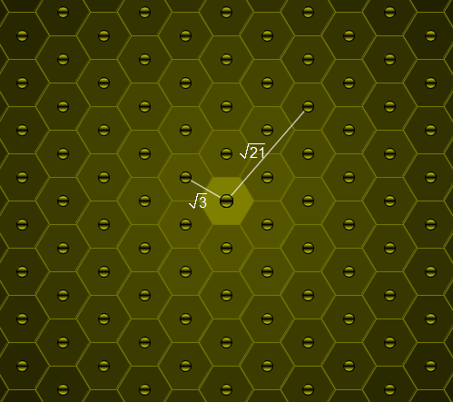

Consider a honey bee's honeycomb where each cell is a perfect regular hexagon with side length $1$.

One particular cell is occupied by the queen bee.
For a positive real number $L$, let $\text{B}(L)$ count the cells with distance $L$ from the queen bee cell (all distances are measured from centre to centre); you may assume that the honeycomb is large enough to accommodate for any distance we wish to consider.
For example, $\text{B}(\sqrt 3)=6$, $\text{B}(\sqrt {21}) = 12$ and $\text{B}(111\,111\,111) = 54$.
Find the number of $L \le 5 \times 10^{11}$ such that $\text{B}(L) = 450$.